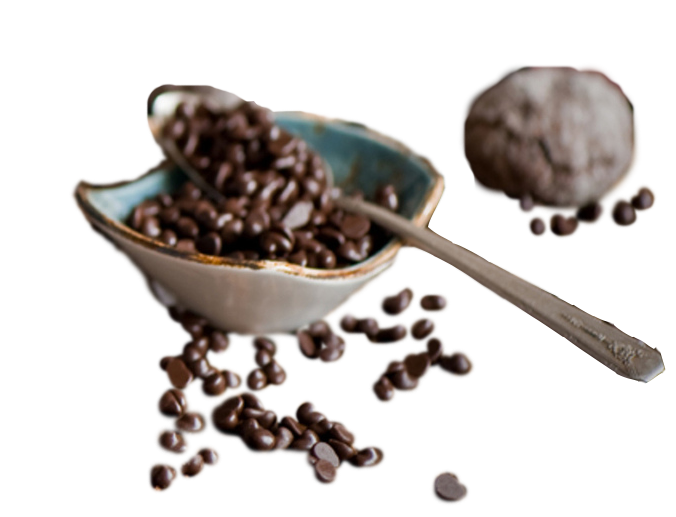

|
| Minecraft Dungeons | Minecraft Dungeons — это ролевая видеоигра жанра «экшн/приключение», где игроки могут путешествовать по процедурно генерируемым уровням и сражаться лицом к лицу с монстрами и главным антагонистом игры — архизлодеянином. | Ціна (грн) |
|---|---|---|---|
|  | Кава з прянощами (кардамоном , корицею , цедрою , цитрусових) | 120/40/10 | 49,00 | test | 120/40/10 | 49,00 |
| test | 120/40/10 | 43,00 | |
| test | 120/40/10 | 43,00 | |
| test | 120/40/10 | 43,00 |
Bananaстюард
Є речі, які варті того, щоб їм зберігали вірність.kevin